CPU Cgroup
如何理解CPU使用和CPU Cgroup？
既然我们需要理解CPU Cgroup，那么就有必要先来看一下Linux里的CPU使用的概念，这是因为CPU Cgroup最大的作用就是限制CPU使用。
CPU使用的分类
如果你想查看Linux系统的CPU使用的话，会用什么方法呢？最常用的肯定是运行top了。
我们对照下图的top运行界面，在截图第三行，"%Cpu(s)"开头的这一行，你会看到一串数值，也就是"0.0 us, 0.0 sy, 0.0 ni, 99.9 id, 0.0 wa, 0.0 hi, 0.0 si, 0.0 st"，那么这里的每一项值都是什么含义呢？
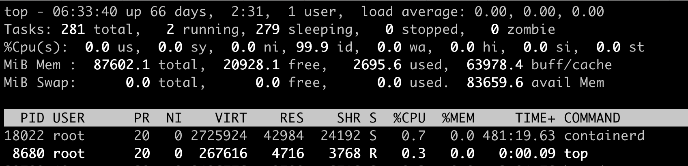
下面这张图里最长的带箭头横轴，我们可以把它看成一个时间轴。同时，它的上半部分代表Linux用户态（User space），下半部分代表内核态（Kernel space）。这里为了方便你理解，我们先假设只有一个CPU吧。
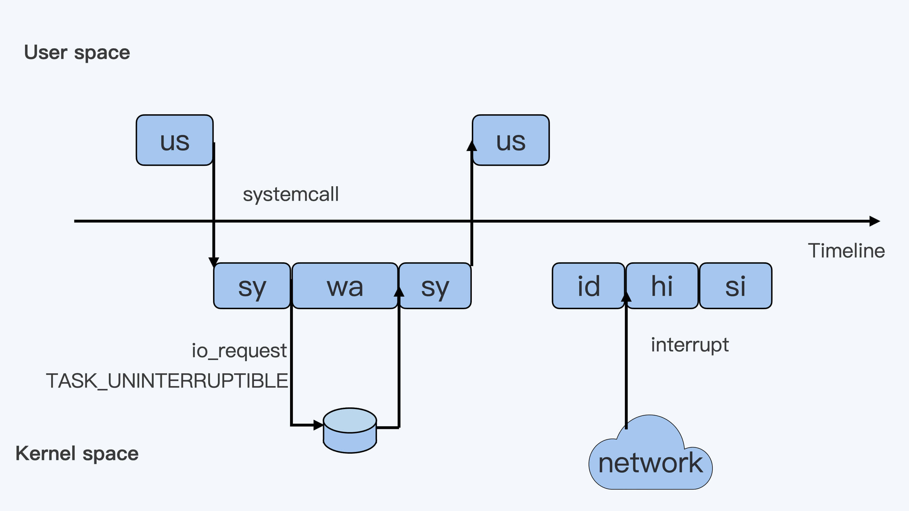
假设一个用户程序开始运行了，那么就对应着第一个"us"框，"us"是"user"的缩写，代表Linux的用户态CPU Usage。普通用户程序代码中，只要不是调用系统调用（System Call），这些代码的指令消耗的CPU就都属于"us"。
当这个用户程序代码中调用了系统调用，比如说read()去读取一个文件，这时候这个用户进程就会从用户态切换到内核态。
内核态read()系统调用在读到真正disk上的文件前，就会进行一些文件系统层的操作。那么这些代码指令的消耗就属于"sy"，这里就对应上面图里的第二个框。"sy"是 "system"的缩写，代表内核态CPU使用。
接下来，这个read()系统调用会向Linux的Block Layer发出一个I/O Request，触发一个真正的磁盘读取操作。
这时候，这个进程一般会被置为TASK_UNINTERRUPTIBLE。而Linux会把这段时间标示成"wa"，对应图中的第三个框。"wa"是"iowait"的缩写，代表等待I/O的时间，这里的I/O是指Disk I/O。
紧接着，当磁盘返回数据时，进程在内核态拿到数据，这里仍旧是内核态的CPU使用中的"sy"，也就是图中的第四个框。
然后，进程再从内核态切换回用户态，在用户态得到文件数据，这里进程又回到用户态的CPU使用，"us"，对应图中第五个框。
好，这里我们假设一下，这个用户进程在读取数据之后，没事可做就休眠了。并且我们可以进一步假设，这时在这个CPU上也没有其他需要运行的进程了，那么系统就会进入"id"这个步骤，也就是第六个框。"id"是"idle"的缩写，代表系统处于空闲状态。
如果这时这台机器在网络收到一个网络数据包，网卡就会发出一个中断（interrupt）。相应地，CPU会响应中断，然后进入中断服务程序。
这时，CPU就会进入"hi"，也就是第七个框。"hi"是"hardware irq"的缩写，代表CPU处理硬中断的开销。由于我们的中断服务处理需要关闭中断，所以这个硬中断的时间不能太长。
但是，发生中断后的工作是必须要完成的，如果这些工作比较耗时那怎么办呢？Linux中有一个软中断的概念（softirq），它可以完成这些耗时比较长的工作。
你可以这样理解这个软中断，从网卡收到数据包的大部分工作，都是通过软中断来处理的。那么，CPU就会进入到第八个框，"si"。这里"si"是"softirq"的缩写，代表CPU处理软中断的开销。
这里你要注意，无论是"hi"还是"si"，它们的CPU时间都不会计入进程的CPU时间。 这是因为本身它们在处理的时候就不属于任何一个进程。
好了，通过这个场景假设，我们介绍了大部分的Linux CPU使用。
不过，我们还剩两个类型的CPU使用没讲到，我想给你做个补充，一次性带你做个全面了解。这样以后你解决相关问题时，就不会再犹豫，这些值到底影不影响CPU Cgroup中的限制了。下面我给你具体讲一下。
一个是"ni"，是"nice"的缩写，这里表示如果进程的nice值是正值（1-19），代表优先级比较低的进程运行时所占用的CPU。
另外一个是"st"，"st"是"steal"的缩写，是在虚拟机里用的一个CPU使用类型，表示有多少时间是被同一个宿主机上的其他虚拟机抢走的。
综合前面的内容，我再用表格为你总结一下：
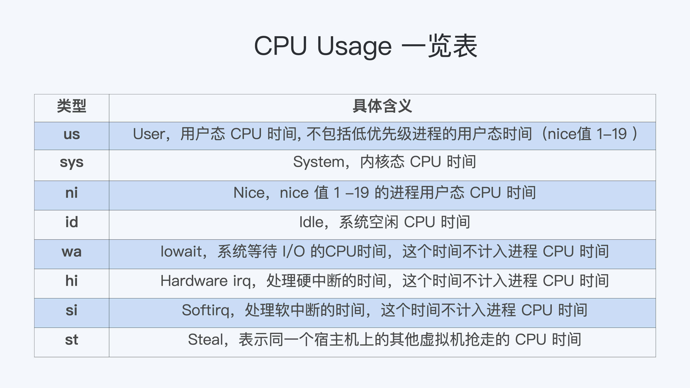
CPU Cgroup
CPU Cgroup是Cgroups其中的一个Cgroups子系统，它是用来限制进程的CPU使用的。
进程的CPU使用包含两部分: 一个是用户态，这里的用户态包含了us和ni；还有一部分是内核态，也就是sy。
至于wa、hi、si，这些I/O或者中断相关的CPU使用，CPU Cgroup不会去做限制，那么接下来我们就来看看CPU Cgoup是怎么工作的？
每个Cgroups子系统都是通过一个虚拟文件系统挂载点的方式，挂到一个缺省的目录下，CPU Cgroup 一般在Linux 发行版里会放在 /sys/fs/cgroup/cpu 这个目录下。
在这个子系统的目录下，每个控制组（Control Group） 都是一个子目录，各个控制组之间的关系就是一个树状的层级关系（hierarchy）。
比如说，我们在子系统的最顶层开始建立两个控制组（也就是建立两个目录）group1 和 group2，然后再在group2的下面再建立两个控制组group3和group4。
这样操作以后，我们就建立了一个树状的控制组层级，你可以参考下面的示意图。
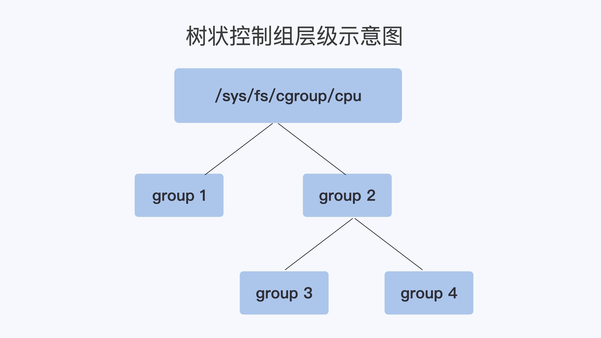
那么我们的每个控制组里，都有哪些CPU Cgroup相关的控制信息呢？这里我们需要看一下每个控制组目录中的内容：
# pwd
/sys/fs/cgroup/cpu
# mkdir group1 group2
# cd group2
# mkdir group3 group4
# cd group3
# ls cpu.*
cpu.cfs_period_us cpu.cfs_quota_us cpu.rt_period_us cpu.rt_runtime_us cpu.shares cpu.stat
考虑到在云平台里呢，大部分程序都不是实时调度的进程，而是普通调度（SCHED_NORMAL）类型进程，那什么是普通调度类型呢？
因为普通调度的算法在Linux中目前是CFS （Completely Fair Scheduler，即完全公平调度器）。为了方便你理解，我们就直接来看CPU Cgroup和CFS相关的参数，一共有三个。
第一个参数是 cpu.cfs_period_us，它是CFS算法的一个调度周期，一般它的值是100000，以microseconds为单位，也就100ms。
第二个参数是 cpu.cfs_quota_us，它“表示CFS算法中，在一个调度周期里这个控制组被允许的运行时间，比如这个值为50000时，就是50ms。
如果用这个值去除以调度周期（也就是cpu.cfs_period_us），50ms/100ms = 0.5，这样这个控制组被允许使用的CPU最大配额就是0.5个CPU。
从这里能够看出，cpu.cfs_quota_us是一个绝对值。如果这个值是200000，也就是200ms，那么它除以period，也就是200ms/100ms=2。
你看，结果超过了1个CPU，这就意味着这时控制组需要2个CPU的资源配额。
我们再来看看第三个参数， cpu.shares。这个值是CPU Cgroup对于控制组之间的CPU分配比例，它的缺省值是1024。
假设我们前面创建的group3中的cpu.shares是1024，而group4中的cpu.shares是3072，那么group3:group4=1:3。
这个比例是什么意思呢？举个具体的例子:
在一台4个CPU的机器上，当group3和group4都需要4个CPU的时候，它们实际分配到的CPU分别是这样的：group3是1个，group4是3个。
我们刚才讲了CPU Cgroup里的三个关键参数，接下来我们就通过几个例子来进一步理解一下，代码你可以在 这里 找到。
第一个例子，我们启动一个消耗2个CPU（200%）的程序threads-cpu，然后把这个程序的pid加入到group3的控制组里：
./threads-cpu/threads-cpu 2 &
echo $! > /sys/fs/cgroup/cpu/group2/group3/cgroup.procs
在我们没有修改cpu.cfs_quota_us前，用top命令可以看到threads-cpu这个进程的CPU 使用是199%，近似2个CPU。
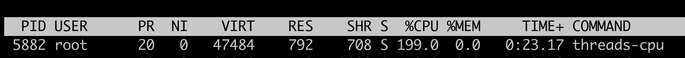
然后，我们更新这个控制组里的cpu.cfs_quota_us，把它设置为150000（150ms）。把这个值除以cpu.cfs_period_us，计算过程是150ms/100ms=1.5, 也就是1.5个CPU，同时我们也把cpu.shares设置为1024。
echo 150000 > /sys/fs/cgroup/cpu/group2/group3/cpu.cfs_quota_us
echo 1024 > /sys/fs/cgroup/cpu/group2/group3/cpu.shares
这时候我们再运行top，就会发现threads-cpu进程的CPU使用减小到了150%。这是因为我们设置的cpu.cfs_quota_us起了作用，限制了进程CPU的绝对值。
但这时候cpu.shares的作用还没有发挥出来，因为cpu.shares是几个控制组之间的CPU分配比例，而且一定要到整个节点中所有的CPU都跑满的时候，它才能发挥作用。
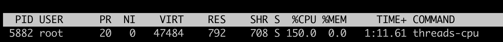
好，下面我们再来运行第二个例子来理解cpu.shares。我们先把第一个例子里的程序启动，同时按前面的内容，一步步设置好group3里cpu.cfs_quota_us 和cpu.shares。
设置完成后，我们再启动第二个程序，并且设置好group4里的cpu.cfs_quota_us 和 cpu.shares。
group3：
./threads-cpu/threads-cpu 2 & # 启动一个消耗2个CPU的程序
echo $! > /sys/fs/cgroup/cpu/group2/group3/cgroup.procs #把程序的pid加入到控制组
echo 150000 > /sys/fs/cgroup/cpu/group2/group3/cpu.cfs_quota_us #限制CPU为1.5CPU
echo 1024 > /sys/fs/cgroup/cpu/group2/group3/cpu.shares
group4：
./threads-cpu/threads-cpu 4 & # 启动一个消耗4个CPU的程序
echo $! > /sys/fs/cgroup/cpu/group2/group4/cgroup.procs #把程序的pid加入到控制组
echo 350000 > /sys/fs/cgroup/cpu/group2/group4/cpu.cfs_quota_us #限制CPU为3.5CPU
echo 3072 > /sys/fs/cgroup/cpu/group2/group3/cpu.shares # shares 比例 group4: group3 = 3:1
好了，现在我们的节点上总共有4个CPU，而group3的程序需要消耗2个CPU，group4里的程序要消耗4个CPU。
即使cpu.cfs_quota_us已经限制了进程CPU使用的绝对值，group3的限制是1.5CPU，group4是3.5CPU，1.5+3.5=5，这个结果还是超过了节点上的4个CPU。
好了，说到这里，我们发现在这种情况下，cpu.shares终于开始起作用了。
在这里shares比例是group4:group3=3:1，在总共4个CPU的节点上，按照比例，group4里的进程应该分配到3个CPU，而group3里的进程会分配到1个CPU。
我们用top可以看一下，结果和我们预期的一样。
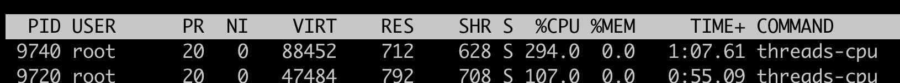
好了，我们对CPU Cgroup的参数做一个梳理。
第一点，cpu.cfs_quota_us和cpu.cfs_period_us这两个值决定了 每个控制组中所有进程的可使用CPU资源的最大值。
第二点，cpu.shares这个值决定了 CPU Cgroup子系统下控制组可用CPU的相对比例，不过只有当系统上CPU完全被占满的时候，这个比例才会在各个控制组间起作用。
现象解释
在解释了Linux CPU Usage和CPU Cgroup这两个基本概念之后，我们再回到我们最初的问题 “怎么限制容器的CPU使用”。有了基础知识的铺垫，这个问题就比较好解释了。
首先，Kubernetes会为每个容器都在CPUCgroup的子系统中建立一个控制组，然后把容器中进程写入到这个控制组里。
这时候"Limit CPU"就需要为容器设置可用CPU的上限。结合前面我们讲的几个参数么，我们就能知道容器的CPU上限具体如何计算了。
容器CPU的上限由cpu.cfs_quota_us除以cpu.cfs_period_us得出的值来决定的。而且，在操作系统里，cpu.cfs_period_us的值一般是个固定值，Kubernetes不会去修改它，所以我们就是只修改cpu.cfs_quota_us。
而"Request CPU"就是无论其他容器申请多少CPU资源，即使运行时整个节点的CPU都被占满的情况下，我的这个容器还是可以保证获得需要的CPU数目，那么这个设置具体要怎么实现呢？
显然我们需要设置cpu.shares这个参数： 在CPU Cgroup中 cpu.shares == 1024表示1个CPU的比例，那么Request CPU的值就是n，给cpu.shares的赋值对应就是n*1024。
如何正确地拿到容器CPU的开销？
无论是容器的所有者还是容器平台的管理者，我们想要精准地对运行着众多容器的云平台做监控，快速排查例如应用的处理能力下降，节点负载过高等问题，就绕不开容器CPU开销。 因为CPU开销的异常，往往是程序异常最明显的一个指标。
在一台物理机器或者虚拟机里，如果你想得到这个节点的CPU使用率，最常用的命令就是top了吧？top一下子就能看到整个节点当前的CPU使用情况。
那么在容器里，top命令也可以做到这点吗？
问题重现
实际上，你在使用容器的时候，如果运行top命令来查看当前容器总共使用了多少CPU，你肯定马上就会失望了。
这是因为我们在容器中运行top命令，虽然可以看到容器中每个进程的CPU使用率，但是top中"%Cpu(s)"那一行中显示的数值，并不是这个容器的CPU整体使用率，而是容器宿主机的CPU使用率。
就像下面的这个例子，我们在一个12个CPU的宿主机上，启动一个容器，然后在容器里运行top命令。
这时我们可以看到，容器里有两个进程threads-cpu，总共消耗了200%的CPU（2 CPU Usage），而"%Cpu(s)"那一行的"us cpu"是58.5%。对于12CPU的系统来说，12 * 58.5%=7.02，也就是说这里显示总共消耗了7个CPU，远远大于容器中2个CPU的消耗。
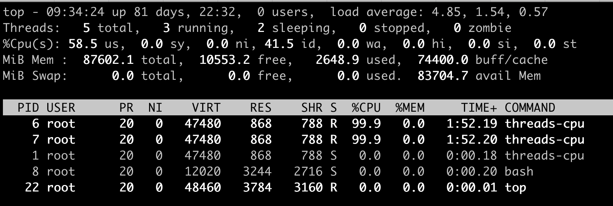
这个例子说明，top这个工具虽然在物理机或者虚拟机上看得到系统CPU开销，但是如果是放在容器环境下，运行top就无法得到容器中总的CPU使用率。那么，我们还有什么其他的办法吗？
进程CPU使用率和系统CPU使用率
通过问题重现，我们发现top工具主要显示了宿主机系统整体的CPU使用率，以及单个进程的CPU使用率。既然没有现成的工具可以得到容器CPU开销，那我们需要自己开发一个工具来解决问题了。
其实我们自己推导，也没有那么难。我认为，最有效的思路还是从原理上去理解问题。
所以，在解决怎样得到单个容器整体的CPU使用率这个问题之前，我们先来学习一下，在Linux中到底是如何计算单个进程的CPU使用率，还有整个系统的CPU使用率的。
进程CPU使用率
Linux中每个进程的CPU使用率，我们都可以用top命令查看。
对照我们前面的那张示意图，我们可以发现，每个进程在top命令输出中都有对应的一行，然后“%CPU”的那一列就是这个进程的实时CPU使用率了。
比如说，100%就表示这个进程在这个瞬时使用了1个CPU，200%就是使用了2个CPU。那么这个百分比的数值是怎么得到呢？
最直接的方法，就是从源头开始寻找答案。因为是top命令的输出，我们可以去看一下top命令的 源代码。在代码中你会看到对于每个进程，top都会从proc文件系统中每个进程对应的stat文件中读取2个数值。我们先来看这个文件，再来解读文件中具体的两个数值。
这个stat文件就是 /proc/[pid]/stat ， [pid] 就是替换成具体一个进程的PID值。比如PID值为1的进程，这个文件就是 /proc/1/stat ，那么这个 /proc/[pid]/stat 文件里有什么信息呢？
其实这个stat文件实时输出了进程的状态信息，比如进程的运行态（Running还是 Sleeping）、父进程PID、进程优先级、进程使用的内存等等总共50多项。
完整的stat文件内容和格式在proc文件系统的 Linux programmer’s manual 里定义了。在这里，我们只需要重点关注这两项数值，stat文件中的第14项utime和第15项stime。
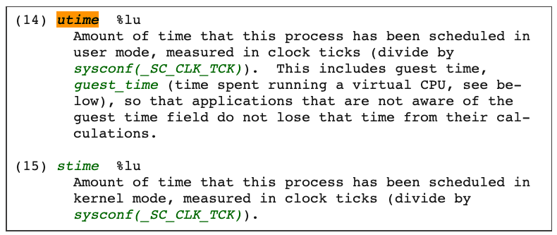
那么这两项数值utime和stime是什么含义呢？utime是表示进程的用户态部分在Linux调度中获得CPU的ticks，stime是表示进程的内核态部分在Linux调度中获得CPU的ticks。
看到这个解释，你可能又冒出一个新问题，疑惑ticks是什么?这个ticks就是Linux操作系统中的一个时间单位，你可以理解成类似秒，毫秒的概念。
在Linux中有个自己的时钟，它会周期性地产生中断。每次中断都会触发Linux内核去做一次进程调度，而这一次中断就是一个tick。因为是周期性的中断，比如1秒钟100次中断，那么一个tick作为一个时间单位看的话，也就是1/100秒。
我给你举个例子说明，假如进程的utime是130ticks，就相当于130 * 1/100=1.3秒，也就是进程从启动开始在用户态总共运行了1.3秒钟。
这里需要你注意，utime和stime都是一个累计值，也就是说从进程启动开始，这两个值就是一直在累积增长的。
那么我们怎么计算，才能知道某一进程在用户态和内核态中，分别获得了多少CPU的ticks呢？
首先，我们可以假设这个瞬时是1秒钟，这1秒是T1时刻到T2时刻之间的，那么这样我们就能获得 T1 时刻的utime_1 和stime_1，同时获得T2时刻的utime_2 和 stime_2。
在这1秒的瞬时，进程用户态获得的CPU ticks就是 (utime_2 – utime_1), 进程内核态获得的CPU ticks就是 (stime_2 – stime_1)。
那么我们可以推导出，进程CPU总的开销就是用户态加上内核态，也就是在1秒瞬时进程总的CPU ticks等于 (utime_2 – utime_1) + (stime_2 – stime_1)。
好了，现在我们得到了进程以ticks为单位的CPU开销，接下来还要做个转化。我们怎样才能把这个值转化成我们熟悉的百分比值呢？其实也不难，我们还是可以去top的 源代码 里得到这个百分比的计算公式。
简单总结一下，这个公式是这样的：
进程的CPU使用率=((utime_2 – utime_1) + (stime_2 – stime_1)) * 100.0 / (HZ * et * 1 )
接下来，我再给你讲一下，这个公式里每一个部分的含义。
首先， ((utime_2 – utime_1) + (stime_2 – stime_1))是瞬时进程总的CPU ticks。这个我们已经在前面解释过了。
其次，我们来看100.0，这里乘以100.0的目的是产生百分比数值。
最后，我再讲一下 (HZ * et * 1)。这是被除数这里的三个参数，我给你详细解释一下。
第一个HZ是什么意思呢？前面我们介绍ticks里说了，ticks是按照固定频率发生的，在我们的Linux系统里1秒钟是100次，那么HZ就是1秒钟里ticks的次数，这里值是100。
第二个参数et是我们刚才说的那个“瞬时”的时间，也就是得到utime_1和utime_2这两个值的时间间隔。
第三个“1”, 就更容易理解了，就是1个CPU。那么这三个值相乘，你是不是也知道了它的意思呢？就是在这“瞬时”的时间（et）里，1个CPU所包含的ticks数目。
解释了这些参数，我们可以把这个公式简化一下，就是下面这样：
进程的CPU使用率=（进程的ticks/单个CPU总ticks）*100.0
知道了这个公式，就需要上手来验证一下这个方法对不对，怎么验证呢？我们可以启动一个消耗CPU的小程序，然后读取一下进程对应的/proc/[pid]/stat中的utime和stime，然后用这个方法来计算一下进程使用率这个百分比值，并且和top的输出对比一下，看看是否一致。
先启动一个消耗200%的小程序，它的PID是10021，CPU使用率是200%。
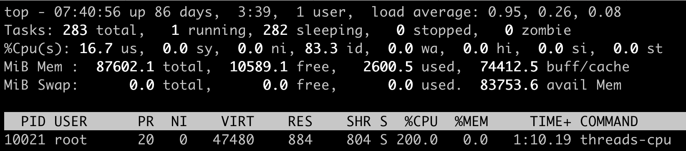
然后，我们查看这个进程对应的stat文件/proc/10021/stat，间隔1秒钟输出第二次，因为stat文件内容很多，我们知道utime和stime第14和15项，所以我们这里只截取了前15项的输出。这里可以看到，utime_1 = 399，stime_1=0，utime_2=600，stime_2=0。
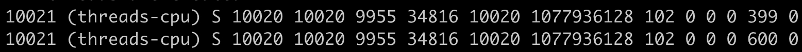
根据前面的公式，我们计算一下进程threads-cpu的CPU使用率。套用前面的公式，计算的过程是：
((600 – 399) + (0 – 0)) * 100.0 / (100 * 1 * 1) =201，也就是201%。你会发现这个值和我们运行top里的值是一样的。同时，我们也就验证了这个公式是没问题的。
系统CPU使用率
前面我们介绍了Linux中如何获取单个进程的CPU使用率，下面我们再来看看Linux里是怎么计算系统的整体CPU使用率的。
其实知道了如何计算单个进程的CPU使用率之后，要理解系统整体的CPU使用率计算方法就简单多了。
同样，我们要计算CPU使用率，首先需要拿到数据，数据源也同样可以从proc文件系统里得到，对于整个系统的CPU使用率，这个文件就是/proc/stat。
在/proc/stat 文件的 cpu 这行有10列数据，同样我们可以在proc文件系统的 Linux programmer’s manual 里，找到每一列数据的定义，而前8列数据正好对应top输出中"%Cpu(s)"那一行里的8项数据，也就是在上一讲中，我们介绍过的user/system/nice/idle/iowait/irq/softirq/steal 这8项。
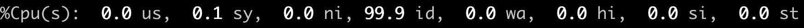
而在/proc/stat里的每一项的数值，就是系统自启动开始的ticks。那么要计算出“瞬时”的CPU使用率，首先就要算出这个“瞬时”的ticks，比如1秒钟的“瞬时”，我们可以记录开始时刻T1的ticks, 然后再记录1秒钟后T2时刻的ticks，再把这两者相减，就可以得到这1秒钟的ticks了。
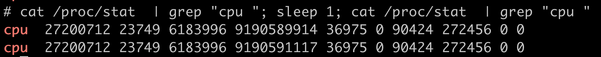
这里我们可以得到，在这1秒钟里每个CPU使用率的ticks：
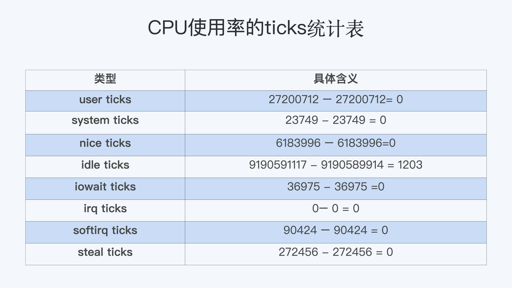
我们想要计算每一种CPU使用率的百分比，其实也很简单。我们只需要把所有在这1秒里的ticks相加得到一个总值，然后拿某一项的ticks值，除以这个总值。比如说计算idle CPU的使用率就是：
1203 /（ 0 + 0 + 0 + 1203 + 0 + 0 + 0 + 0）=100%
好了，我们现在来整体梳理一下，我们通过Linux里的工具，要怎样计算进程的CPU使用率和系统的CPU使用率。
对于单个进程的CPU使用率计算，我们需要读取对应进程的/proc/[pid]/stat文件，将进程瞬时用户态和内核态的ticks数相加，就能得到进程的总ticks。
然后我们运用公式“(进程的ticks / 单个CPU总ticks) * 100.0”计算出进程CPU使用率的百分比值。
对于系统的CPU使用率，需要读取/proc/stat文件，得到瞬时各项CPU使用率的ticks值，相加得到一个总值，单项值除以总值就是各项CPU的使用率。
解决问题
前面我们学习了在Linux中，top工具是怎样计算每个进程的CPU使用率，以及系统总的CPU使用率。现在我们再来看最初的问题：为什么在容器中运行top命令不能得到容器中总的CPU使用率？
这就比较好解释了，对于系统总的CPU使用率，需要读取/proc/stat文件，但是这个文件中的各项CPU ticks是反映整个节点的，并且这个/proc/stat文件也不包含在任意一个Namespace里。
那么， 对于top命令来说，它只能显示整个节点中各项CPU的使用率，不能显示单个容器的各项CPU的使用率。既然top命令不行，我们还有没有办法得到整个容器的CPU使用率呢？
我们之前已经学习过了CPU Cgroup，每个容器都会有一个CPU Cgroup的控制组。在这个控制组目录下面有很多参数文件，有的参数可以决定这个控制组里最大的CPU可使用率外，除了它们之外，目录下面还有一个可读项cpuacct.stat。
这里包含了两个统计值，这两个值分别是 这个控制组里所有进程的内核态ticks和用户态的ticks，那么我们就可以用前面讲过的公式，也就是计算进程CPU使用率的公式，去计算整个容器的CPU使用率：
CPU使用率=((utime_2 – utime_1) + (stime_2 – stime_1)) * 100.0 / (HZ * et * 1 )
我们还是以问题重现中的例子说明，也就是最开始启动容器里的那两个容器threads-cpu进程。
就像下图显示的这样，整个容器的CPU使用率的百分比就是 ( (174021 - 173820) + (4 – 4)) * 100.0 / (100 * 1 * 1) = 201, 也就是201%。 所以，我们从每个容器的CPU Cgroup控制组里的cpuacct.stat的统计值中， 可以比较快地得到整个容器的CPU使用率。
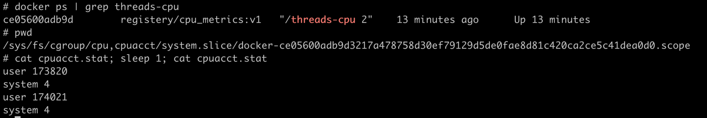
重点总结
Linux里获取CPU使用率的工具，比如top，都是通过读取proc文件系统下的stat文件来得到CPU使用了多少ticks。而这里的ticks，是Linux操作系统里的一个时间单位，可以理解成类似秒，毫秒的概念。
对于每个进程来说，它的stat文件是/proc/[pid]/stat，里面包含了进程用户态和内核态的ticks数目；对于整个节点，它的stat文件是 /proc/stat，里面包含了user/system/nice/idle/iowait等不同CPU开销类型的ticks。
由于/proc/stat文件是整个节点全局的状态文件，不属于任何一个Namespace，因此在容器中无法通过读取/proc/stat文件来获取单个容器的CPU使用率。
所以要得到单个容器的CPU使用率，我们可以从CPU Cgroup每个控制组里的统计文件cpuacct.stat中获取。 单个容器CPU使用率=((utime_2 – utime_1) + (stime_2 – stime_1)) * 100.0 / (HZ * et * 1 )。
得到单个容器的CPU的使用率，那么当宿主机上负载变高的时候，就可以很快知道是哪个容器引起的问题。同时，用户在管理自己成百上千的容器的时候，也可以很快发现CPU使用率异常的容器，这样就能及早地介入去解决问题。
加了CPU Cgroup限制，为什么容器还是很慢？
CPU Cgroup可以限制进程的CPU资源使用，但是CPU Cgroup对容器的资源限制是存在盲点的。
什么盲点呢？就是无法通过CPU Cgroup来控制Load Average的平均负载。而没有这个限制，就会影响我们系统资源的合理调度，很可能导致我们的系统变得很慢。
问题再现
在Linux的系统维护中，我们需要经常查看CPU使用情况，再根据这个情况分析系统整体的运行状态。有时候你可能会发现，明明容器里所有进程的CPU使用率都很低，甚至整个宿主机的CPU使用率都很低，而机器的Load Average里的值却很高，容器里进程运行得也很慢。
这么说有些抽象，我们一起动手再现一下这个情况，这样你就能更好地理解这个问题了。
比如说下面的top输出，第三行可以显示当前的CPU使用情况，我们可以看到整个机器的CPU Usage几乎为0，因为"id"显示99.9%，这说明CPU是处于空闲状态的。
但是请你注意，这里1分钟的"load average"的值却高达9.09，这里的数值9几乎就意味着使用了9个CPU了，这样CPU Usage和Load Average的数值看上去就很矛盾了。
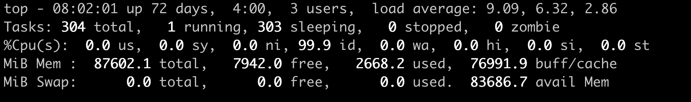
那问题来了，我们在看一个系统里CPU使用情况时，到底是看CPU Usage还是Load Average呢？
这里就涉及到今天要解决的两大问题：
- Load Average到底是什么，CPU Usage和Load Average有什么差别？
- 如果Load Average值升高，应用的性能下降了，这背后的原因是什么呢？
好了，这一讲我们就带着这两个问题，一起去揭开谜底。
什么是Load Average?
要回答前面的问题，很显然我们要搞明白这个Linux里的"load average"这个值是什么意思，又是怎样计算的。
Load Average这个概念，你可能在使用Linux的时候就已经注意到了，无论你是运行uptime, 还是top，都可以看到类似这个输出"load average：2.02, 1.83, 1.20"。那么这一串输出到底是什么意思呢？
最直接的办法当然是看手册了，如果我们用"Linux manual page"搜索uptime或者top，就会看到对这个"load average"和后面三个数字的解释是"the system load averages for the past 1, 5, and 15 minutes"。
这个解释就是说，后面的三个数值分别代表过去1分钟，5分钟，15分钟在这个节点上的Load Average，但是看了手册上的解释，我们还是不能理解什么是Load Average。
这个时候，你如果再去网上找资料，就会发现Load Average是一个很古老的概念了。上个世纪70年代，早期的Unix系统上就已经有了这个Load Average，IETF还有一个 RFC546 定义了Load Average，这里定义的Load Average是 一种CPU资源需求的度量。
举个例子，对于一个单个CPU的系统，如果在1分钟的时间里，处理器上始终有一个进程在运行，同时操作系统的进程可运行队列中始终都有9个进程在等待获取CPU资源。那么对于这1分钟的时间来说，系统的"load average"就是1+9=10，这个定义对绝大部分的Unix系统都适用。
对于Linux来说，如果只考虑CPU的资源，Load Averag等于单位时间内正在运行的进程加上可运行队列的进程，这个定义也是成立的。通过这个定义和我自己的观察，我给你归纳了下面三点对Load Average的理解。
第一，不论计算机CPU是空闲还是满负载，Load Average都是Linux进程调度器中 可运行队列（Running Queue）里的一段时间的平均进程数目。
第二，计算机上的CPU还有空闲的情况下，CPU Usage可以直接反映到"load average"上，什么是CPU还有空闲呢？具体来说就是可运行队列中的进程数目小于CPU个数，这种情况下，单位时间进程CPU Usage相加的平均值应该就是"load average"的值。
第三，计算机上的CPU满负载的情况下，计算机上的CPU已经是满负载了，同时还有更多的进程在排队需要CPU资源。这时"load average"就不能和CPU Usage等同了。
比如对于单个CPU的系统，CPU Usage最大只是有100%，也就1个CPU；而"load average"的值可以远远大于1，因为"load average"看的是操作系统中可运行队列中进程的个数。
这样的解释可能太抽象了，为了方便你理解，我们一起动手验证一下。
怎么验证呢？我们可以执行个程序来模拟一下,先准备好一个可以消耗任意CPU Usage的 程序，在执行这个程序的时候，后面加个数字作为参数，
比如下面的设置，参数是2，就是说这个进程会创建出两个线程，并且每个线程都跑满100%的CPU，2个线程就是2 * 100% = 200%的CPU Usage，也就是消耗了整整两个CPU的资源。
# ./threads-cpu 2
准备好了这个CPU Usage的模拟程序，我们就可以用它来查看CPU Usage和Load Average之间的关系了。
接下来我们一起跑两个例子，第一个例子是执行2个满负载的线程，第二个例子执行6个满负载的线程，同样都是在一台4个CPU的节点上。
先来看第一个例子，我们在一台4个CPU的计算机节点上运行刚才这个模拟程序，还是设置参数为2，也就是使用2个CPU Usage。在这个程序运行了几分钟之后，我们运行top来查看一下CPU Usage和Load Average。
我们可以看到两个threads-cpu各自都占了将近100%的CPU，两个就是200%，2个CPU，对于4个CPU的计算机来说，CPU Usage占了50%，空闲了一半，这个我们也可以从 idle （id）：49.9%得到印证。
这时候，Load Average里第一项（也就是前1分钟的数值）为1.98，近似于2。这个值和我们一直运行的200%CPU Usage相对应，也验证了我们之前归纳的第二点—— CPU Usage可以反映到Load Average上。
因为运行的时间不够，前5分钟，前15分钟的Load Average还没有到2，而且后面我们的例子程序一般都只会运行几分钟，所以这里我们只看前1分钟的Load Average值就行。
另外，Linux内核中不使用浮点计算，这导致Load Average里的1分钟，5分钟，15分钟的时间值并不精确，但这不影响我们查看Load Average的数值，所以先不用管这个时间的准确性。
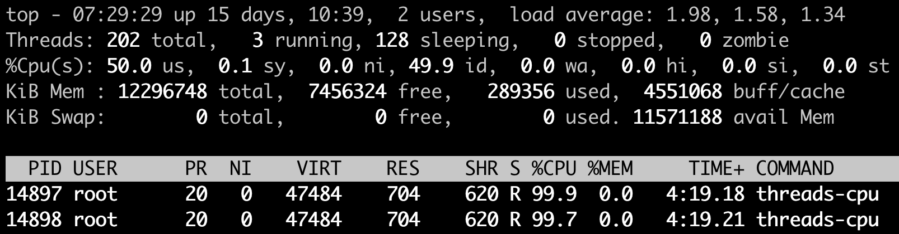
那我们再来跑第二个例子，同样在这个4个CPU的计算机节点上，如果我们执行CPU Usage模拟程序threads-cpu，设置参数为6，让这个进程建出6个线程，这样每个线程都会尽量去抢占CPU，但是计算机总共只有4个CPU，所以这6个线程的CPU Usage加起来只是400%。
显然这时候4个CPU都被占满了，我们可以看到整个节点的idle（id）也已经是0.0%了。
但这个时候，我们看看前1分钟的Load Average，数值不是4而是5.93接近6，我们正好模拟了6个高CPU需求的线程。这也告诉我们，Load Average表示的是一段时间里运行队列中需要被调度的进程/线程平均数目。
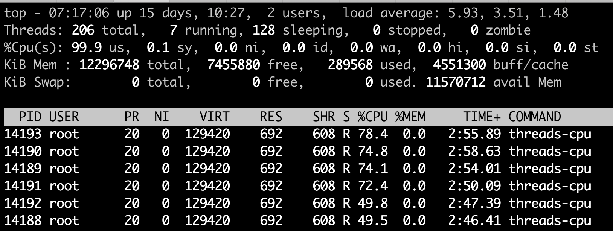
讲到这里，我们是不是就可以认定Load Average就代表一段时间里运行队列中需要被调度的进程或者线程平均数目了呢? 或许对其他的Unix系统来说，这个理解已经够了，但是对于Linux系统还不能这么认定。
为什么这么说呢？故事还要从Linux早期的历史说起，那时开发者Matthias有这么一个发现，比如把快速的磁盘换成了慢速的磁盘，运行同样的负载，系统的性能是下降的，但是Load Average却没有反映出来。
他发现这是因为Load Average只考虑运行态的进程数目，而没有考虑等待I/O的进程。所以，他认为Load Average如果只是考虑进程运行队列中需要被调度的进程或线程平均数目是不够的，因为对于处于I/O资源等待的进程都是处于TASK_UNINTERRUPTIBLE状态的。
那他是怎么处理这件事的呢？估计你也猜到了，他给内核加一个patch（补丁），把处于TASK_UNINTERRUPTIBLE状态的进程数目也计入了Load Average中。
在这里我们又提到了TASK_UNINTERRUPTIBLE状态的进程，在前面的章节中我们介绍过，我再给你强调一下， TASK_UNINTERRUPTIBLE是Linux进程状态的一种，是进程为等待某个系统资源而进入了睡眠的状态，并且这种睡眠的状态是不能被信号打断的。
下面就是1993年Matthias的kernel patch，你有兴趣的话，可以读一下。
From: Matthias Urlichs <urlichs@smurf.sub.org>
Subject: Load average broken ?
Date: Fri, 29 Oct 1993 11:37:23 +0200
The kernel only counts "runnable" processes when computing the load average.
I don't like that; the problem is that processes which are swapping or
waiting on "fast", i.e. noninterruptible, I/O, also consume resources.
It seems somewhat nonintuitive that the load average goes down when you
replace your fast swap disk with a slow swap disk...
Anyway, the following patch seems to make the load average much more
consistent WRT the subjective speed of the system. And, most important, the
load is still zero when nobody is doing anything. ;-)
--- kernel/sched.c.orig Fri Oct 29 10:31:11 1993
+++ kernel/sched.c Fri Oct 29 10:32:51 1993
@@ -414,7 +414,9 @@
unsigned long nr = 0;
for(p = &LAST_TASK; p > &FIRST_TASK; --p)
- if (*p && (*p)->state == TASK_RUNNING)
+ if (*p && ((*p)->state == TASK_RUNNING) ||
+ (*p)->state == TASK_UNINTERRUPTIBLE) ||
+ (*p)->state == TASK_SWAPPING))
nr += FIXED_1;
return nr;
}
那么对于Linux的Load Average来说，除了可运行队列中的进程数目，等待队列中的UNINTERRUPTIBLE进程数目也会增加Load Average。
为了验证这一点，我们可以模拟一下UNINTERRUPTIBLE的进程，来看看Load Average的变化。
这里我们做一个 kernel module，通过一个/proc文件系统给用户程序提供一个读取的接口，只要用户进程读取了这个接口就会进入UNINTERRUPTIBLE。这样我们就可以模拟两个处于UNINTERRUPTIBLE状态的进程，然后查看一下Load Average有没有增加。
我们发现程序跑了几分钟之后，前1分钟的Load Average差不多从0增加到了2.16，节点上CPU Usage几乎为0，idle为99.8%。
可以看到，可运行队列（Running Queue）中的进程数目是0，只有休眠队列（Sleeping Queue）中有两个进程，并且这两个进程显示为D state进程，这个D state进程也就是我们模拟出来的TASK_UNINTERRUPTIBLE状态的进程。
这个例子证明了Linux将TASK_UNINTERRUPTIBLE状态的进程数目计入了Load Average中，所以即使CPU上不做任何的计算，Load Average仍然会升高。如果TASK_UNINTERRUPTIBLE状态的进程数目有几百几千个，那么Load Average的数值也可以达到几百几千。
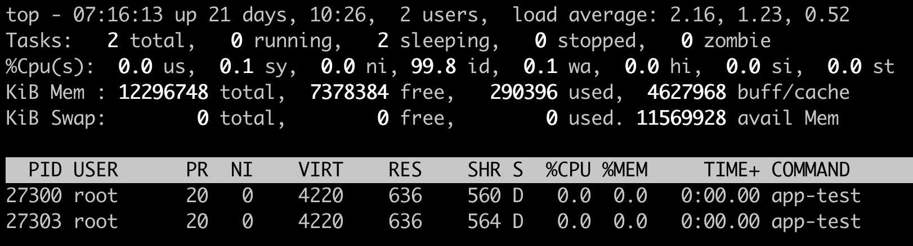
好了，到这里我们就可以准确定义Linux系统里的Load Average了，其实也很简单，你只需要记住，平均负载统计了这两种情况的进程：
第一种是Linux进程调度器中可运行队列（Running Queue）一段时间（1分钟，5分钟，15分钟）的进程平均数。
第二种是Linux进程调度器中休眠队列（Sleeping Queue）里的一段时间的TASK_UNINTERRUPTIBLE状态下的进程平均数。
所以，最后的公式就是： Load Average=可运行队列进程平均数+休眠队列中不可打断的进程平均数
如果打个比方来说明Load Average的统计原理。你可以想象每个CPU就是一条道路，每个进程都是一辆车，怎么科学统计道路的平均负载呢？就是看单位时间通过的车辆，一条道上的车越多，那么这条道路的负载也就越高。
此外，Linux计算系统负载的时候，还额外做了个补丁把TASK_UNINTERRUPTIBLE状态的进程也考虑了，这个就像道路中要把红绿灯情况也考虑进去。一旦有了红灯，汽车就要停下来排队，那么即使道路很空，但是红灯多了，汽车也要排队等待，也开不快。
现象解释：为什么Load Average会升高？
解释了Load Average这个概念，我们再回到这一讲最开始的问题，为什么对容器已经用CPU Cgroup限制了它的CPU Usage，容器里的进程还是可以造成整个系统很高的Load Average。
我们理解了Load Average这个概念之后，就能区分出Load Averge和CPU使用率的区别了。那么这个看似矛盾的问题也就很好回答了，因为 Linux下的Load Averge不仅仅计算了CPU Usage的部分，它还计算了系统中TASK_UNINTERRUPTIBLE状态的进程数目。
讲到这里为止，我们找到了第一个问题的答案，那么现在我们再看第二个问题：如果Load Average值升高，应用的性能已经下降了，真正的原因是什么？问题就出在TASK_UNINTERRUPTIBLE状态的进程上了。
怎么验证这个判断呢？这时候我们只要运行 ps aux | grep “ D ” ，就可以看到容器中有多少TASK_UNINTERRUPTIBLE状态（在ps命令中这个状态的进程标示为"D"状态）的进程，为了方便理解，后面我们简称为D状态进程。而正是这些D状态进程引起了Load Average的升高。
找到了Load Average升高的问题出在D状态进程了，我们想要真正解决问题，还有必要了解D状态进程产生的本质是什么？
在Linux内核中有数百处调用点，它们会把进程设置为D状态，主要集中在disk I/O 的访问和信号量（Semaphore）锁的访问上，因此D状态的进程在Linux里是很常见的。
无论是对disk I/O的访问还是对信号量的访问，都是对Linux系统里的资源的一种竞争。 当进程处于D状态时，就说明进程还没获得资源，这会在应用程序的最终性能上体现出来，也就是说用户会发觉应用的性能下降了。
那么D状态进程导致了性能下降，我们肯定是想方设法去做调试的。但目前D状态进程引起的容器中进程性能下降问题，Cgroups还不能解决，这也就是为什么我们用Cgroups做了配置，即使保证了容器的CPU资源， 容器中的进程还是运行很慢的根本原因。
这里我们进一步做分析，为什么CPU Cgroups不能解决这个问题呢？就是因为Cgroups更多的是以进程为单位进行隔离，而D状态进程是内核中系统全局资源引入的，所以Cgroups影响不了它。
所以我们可以做的是，在生产环境中监控容器的宿主机节点里D状态的进程数量，然后对D状态进程数目异常的节点进行分析，比如磁盘硬件出现问题引起D状态进程数目增加，这时就需要更换硬盘。
重点总结
这一讲我们从CPU Usage和Load Average差异这个现象讲起，最主要的目的是讲清楚Linux下的Load Average这个概念。
在其他Unix操作系统里Load Average只考虑CPU部分，Load Average计算的是进程调度器中可运行队列（Running Queue）里的一段时间（1分钟，5分钟，15分钟）的平均进程数目，而Linux在这个基础上，又加上了进程调度器中休眠队列（Sleeping Queue）里的一段时间的TASK_UNINTERRUPTIBLE状态的平均进程数目。
这里你需要重点掌握Load Average的计算公式，如下图。
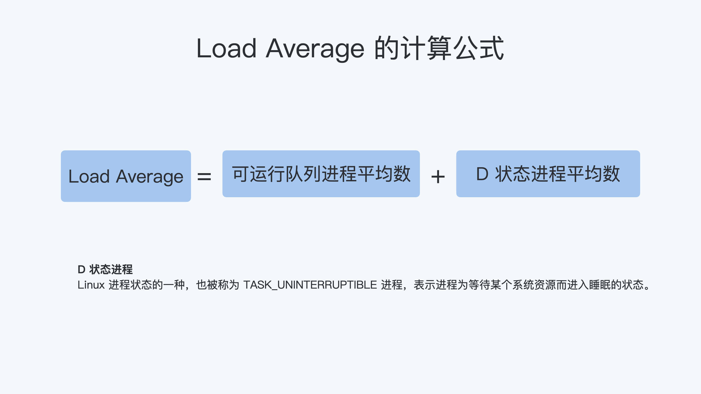
因为TASK_UNINTERRUPTIBLE状态的进程同样也会竞争系统资源，所以它会影响到应用程序的性能。我们可以在容器宿主机的节点对D状态进程做监控，定向分析解决。
CPU限制验证:
只给容器分配最多两核宿主机CPU利用率
# docker run -it --rm --name magedu-c1 --cpus 2 lorel/docker-stress-ng --cpu 4 --vm 4
注：CPU资源限制是将分配给容器的2核心分配到了宿主机每一核心CPU上，也就是容器的总CPU值是在宿主机的每一个核心CPU分配了部分比例。
Tasks: 288 total, 10 running, 278 sleeping, 0 stopped, 0 zombie
%Cpu0 : 51.2 us, 0.0 sy, 0.0 ni, 48.8 id, 0.0 wa, 0.0 hi, 0.0 si, 0.0 st
%Cpu1 : 26.4 us, 23.4 sy, 0.0 ni, 50.2 id, 0.0 wa, 0.0 hi, 0.0 si, 0.0 st
%Cpu2 : 23.1 us, 27.7 sy, 0.0 ni, 49.2 id, 0.0 wa, 0.0 hi, 0.0 si, 0.0 st
%Cpu3 : 18.3 us, 31.3 sy, 0.0 ni, 50.3 id, 0.0 wa, 0.0 hi, 0.0 si, 0.0 st
将容器运行到指定的CPU上：
# docker run -it --rm --name magedu-c1 --cpus 2 --cpuset-cpus 1,3 lorel/docker-stress-ng --cpu 4 --vm 4
基于cpu--shares值(共享值)对CPU进行限制，分别启动两个容器，magedu-c1的--cpu-shares值为1000，magedu-c2的--cpu-shares为500，观察最终效果，--cpu-shares值为1000的magedu-c1的CPU利用率基本是--cpu-shares为500的magedu-c2的两倍：
# docker run -it --rm --name magedu-c1 --cpu-shares 1000 lorel/docker-stress-ng --cpu 4 --vm 4
# docker run -it --rm --name magedu-c2 --cpu-shares 500 lorel/docker-stress-ng --cpu 4 --vm 4